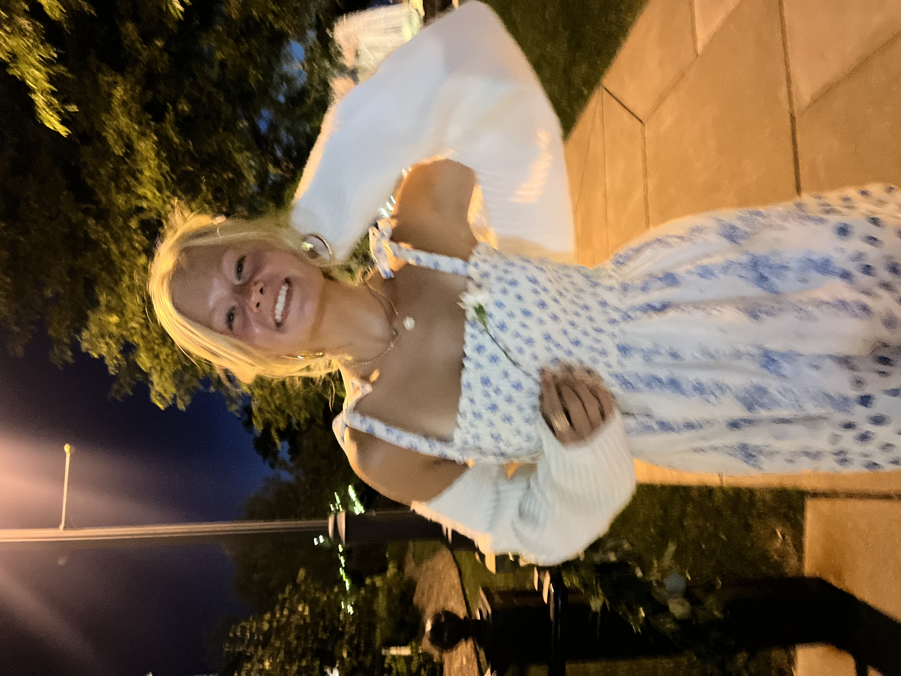

Our Story
The K. Journal started as a simple idea—to create a space that captures what it feels like to stay connected, inspired, and informed, especially from a Midwest perspective. What began as sharing local stories and trends quickly grew into something more.It became a place where local voices meet broader culture, where creativity is highlighted, and where readers can explore what’s happening both close to home and beyond.Today, The K. Journal is more than just content—it’s a space for conversation, reflection, and connection, built for a generation that wants to stay in the know while feeling inspired.
Mission
The goal of the website is to create a space where modern readers can stay informed while also feeling inspired and connected to what’s happening both locally and beyond the Midwest. By blending a strong local perspective with broader cultural coverage, The K. Journal aims to highlight creativity, spark discussion, and give a platform to fresh voices and ideas. Ultimately, it strives to be a trusted, engaging source of stylish and timely content, almost like a public-facing podcast in written form, that reflects the interests and energy of today’s generation.
Meet the Team
